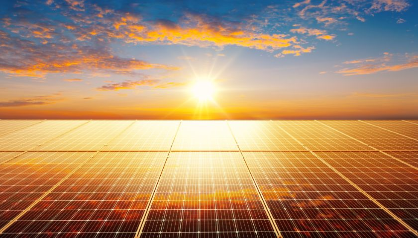
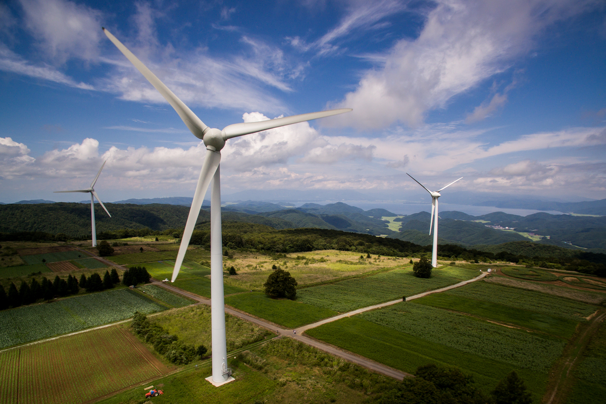
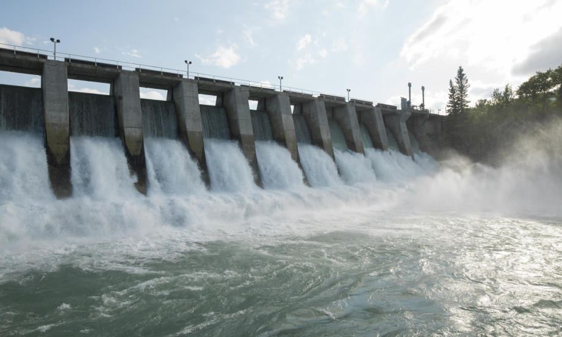

Portal edukacyjny o odnawialnych źródłach energii
Energia słoneczna

Ogniwa fotowoltaiczne wytwarzają prąd stały pod wpływem promieniowania słonecznego. Falownik przekształca go w prąd przemienny wykorzystywany w domowej instalacji i sieci energetycznej.
Kolektory słoneczne służą do pozyskiwania ciepła, przede wszystkim do podgrzewania wody użytkowej. Panele fotowoltaiczne i kolektory mają więc inne przeznaczenie.
Energia wiatrowa

Ruch powietrza powoduje obrót wirnika turbiny. Generator przekształca energię mechaniczną w elektryczną. Pojedyncze turbiny mogą tworzyć większe zespoły, nazywane farmami wiatrowymi.
Przy zbyt słabym wietrze turbina nie produkuje energii. Przy bardzo silnym wietrze może zostać zatrzymana, aby zapobiec uszkodzeniu urządzenia.
Energia wodna

Elektrownia wodna wykorzystuje przepływ wody do napędzania turbiny. Produkcja energii zależy od ilości przepływającej wody oraz różnicy jej poziomów.
Elektrownie przepływowe korzystają z bieżącego przepływu rzeki. Elektrownie zbiornikowe gromadzą wodę, co pozwala w pewnym zakresie regulować moment i wielkość produkcji.
Energia geotermalna
Geotermia wykorzystuje ciepło zgromadzone we wnętrzu Ziemi. Gorące wody podziemne mogą dostarczać ciepło do budynków przez sieci ciepłownicze.
Przy odpowiednio wysokiej temperaturze zasobów można również wytwarzać energię elektryczną. Możliwość wykorzystania geotermii zależy od warunków geologicznych danego obszaru.
Biomasa
Biomasa to materia pochodzenia biologicznego wykorzystywana jako surowiec energetyczny. Przykładami są drewno, słoma i pozostałości z przetwórstwa roślin.
Może być używana do wytwarzania ciepła, energii elektrycznej i biopaliw. Jej spalanie powoduje emisje, a wpływ na środowisko zależy także od sposobu pozyskania surowca.
Biogaz
Biogaz powstaje podczas rozkładu materii organicznej bez dostępu tlenu. W biogazowniach można przetwarzać na przykład odpady spożywcze i pozostałości z produkcji rolniczej.
Zawarty w biogazie metan jest paliwem wykorzystywanym do produkcji prądu i ciepła. Biogaz stanowi jeden ze sposobów energetycznego wykorzystania biomasy.